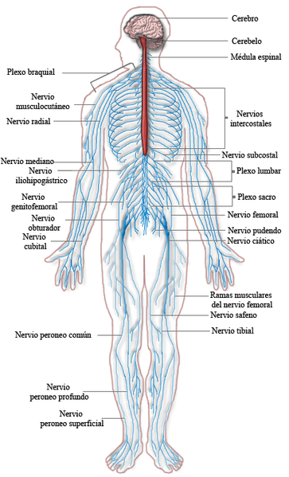
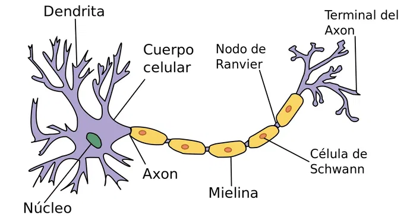
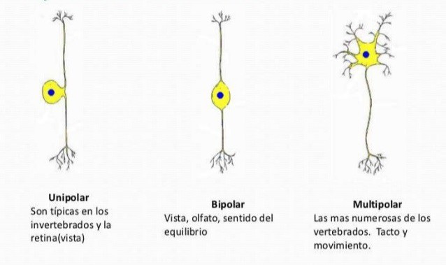
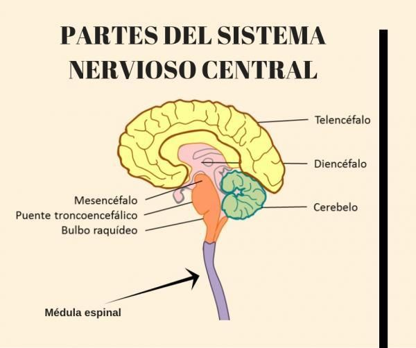
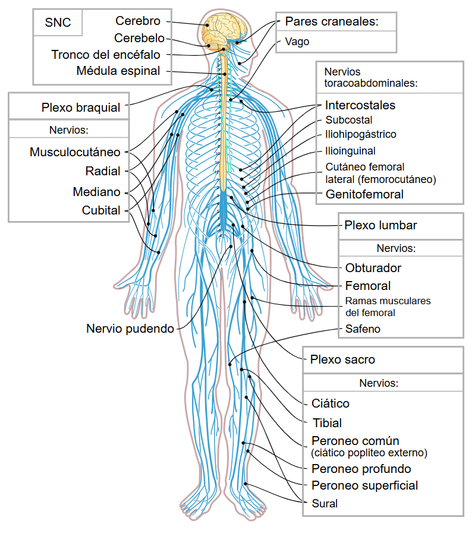

Explora cómo el cerebro controla nuestro comportamiento, emociones y pensamientos.
El sistema más complejo del cuerpo humano: nuestro centro de mando.
El sistema nervioso es uno de los sistemas más complejos e importantes del organismo humano. Su función principal es recibir información del entorno interno y externo, procesarla y generar respuestas que permitan la adaptación del individuo a su ambiente.
Desde la perspectiva de la psicología, es fundamental porque permite procesos como la percepción, la memoria, las emociones, el pensamiento y la conducta.

La unidad básica del sistema nervioso que transmite señales eléctricas y químicas.
La neurona es la célula especializada del sistema nervioso encargada de transmitir información mediante impulsos nerviosos.
Reciben información de otras neuronas y la conducen hacia el cuerpo celular.
Contiene el núcleo y es el centro metabólico de la neurona.
Prolongación larga que transmite el impulso nervioso hacia otras células.
Capa aislante que aumenta la velocidad de transmisión del impulso nervioso.
Liberan neurotransmisores que permiten la comunicación entre neuronas.

Cada tipo cumple un rol específico dentro del sistema nervioso.
Transmiten información desde los órganos sensoriales (ojos, piel, oídos) hacia el sistema nervioso central.
Conducen señales desde el sistema nervioso central hacia músculos y glándulas para generar movimiento.
Conectan neuronas dentro del cerebro y la médula espinal, permitiendo el procesamiento complejo de la información.

Pon a prueba tu conocimiento con esta pregunta rápida.
¿Cuál tipo de neurona envía señales desde los sentidos al cerebro?
Dos grandes divisiones que trabajan juntas para coordinar todo el cuerpo.
El sistema nervioso central (SNC) está formado por el cerebro y la médula espinal. Su función es procesar la información sensorial y coordinar las respuestas del organismo.
Controla funciones cognitivas como el pensamiento, la memoria, el lenguaje y las emociones.
Coordina los movimientos, el equilibrio y la postura corporal.
Transmite señales entre el cerebro y el resto del cuerpo.

El sistema nervioso periférico (SNP) conecta el SNC con los órganos, músculos y tejidos del resto del cuerpo. Incluye todos los nervios fuera del cerebro y la médula espinal.
Controla los movimientos voluntarios de los músculos esqueléticos.
Regula funciones involuntarias como la frecuencia cardíaca, la digestión y la respiración.

Una vista rápida de las diferencias clave entre sus divisiones principales.
| Sistema | Componentes | Función principal | Ubicación |
|---|---|---|---|
| Sistema Nervioso Central (SNC) | Cerebro y médula espinal | Procesar y analizar información | Protegido por huesos (cráneo y columna) |
| Sistema Nervioso Periférico (SNP) | Nervios y ganglios | Conectar el cuerpo con el SNC | Fuera del cráneo y la columna vertebral |
| Sistema Somático | Nervios motores y sensoriales | Control voluntario del movimiento | Músculos esqueléticos |
| Sistema Autónomo | Nervios simpáticos y parasimpáticos | Funciones involuntarias del cuerpo | Órganos internos y glándulas |
Bibliografía en formato APA. Haz clic para ver los detalles de cada fuente.